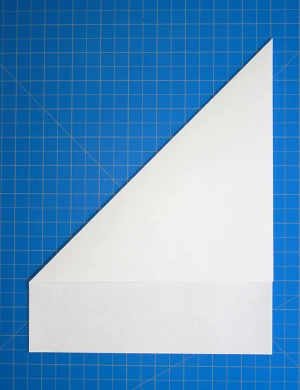
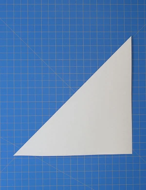
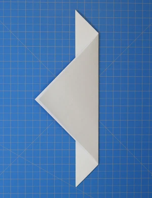
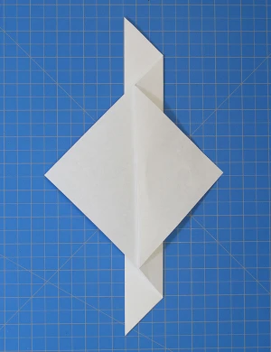
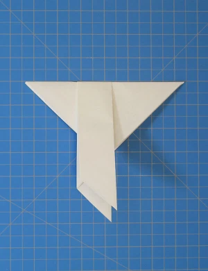
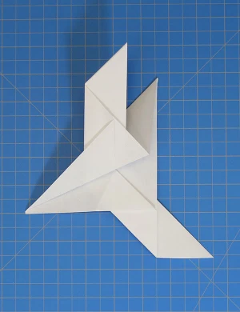
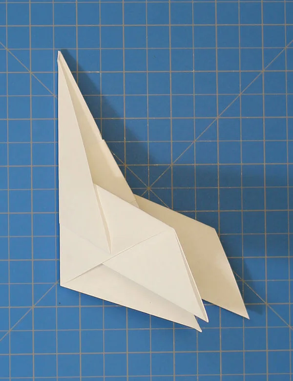
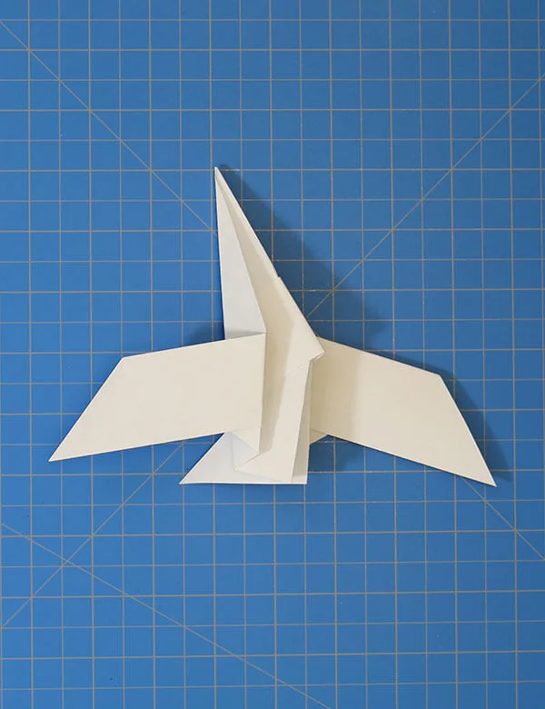

1Step 1
Take one corner and crease it on a diagonal.

Take one corner and crease it on a diagonal.

Trim the bottom offcut so you have a square folded once into a triangle.

Fold the triangle corner over so about one-third overlaps the sheet behind and two-thirds sticks out.

Take one layer and fold it the opposite way as shown.

Crease the sheet down the middle.

Fold one wing up from the nose through to the middle of the tail.

Repeat step six with the other wing as shown in the guide.

Use an accordion fold to tuck the tail of the plane inside as in the photo. Experiment with the angle to find what works best for you.

Fold out one wing and then repeat with the other as shown in the guide.

Optionally, you can accordion fold the nose to make it look like a beak or cut slits on the back of each wing to make feathers as shown in the guide.
With a calm day and a level throw, expect only a short distance, since this design is not built for range. Wind, paper weight, and small crease errors all change the result.
A well-trimmed Display Fold Sculpture should hold a very brief flight; the design is not aimed at hang time. Launching from a higher spot and keeping the wings level will extend it.
It is best for looking great on a shelf. Folding skill is intermediate. Use Letter & A4, 10 steps, needs a cut.
This design is made for display; if you fly it, use a gentle toss and expect a short, floaty descent.